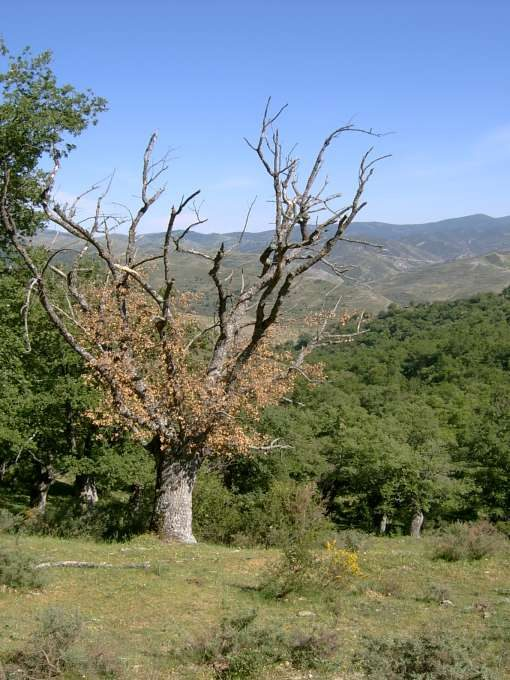
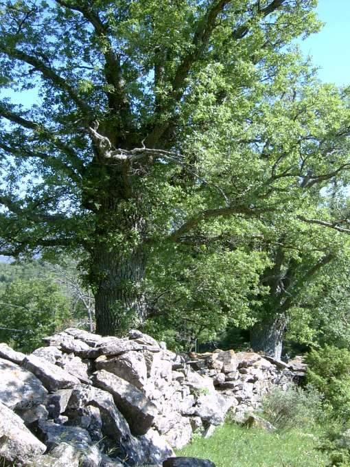

Dehesa de San Román
San Román de Cameros · comarca del Leza
- Distancia9,8 kmida y vuelta
- Desnivel390 m
- Tiempo orientativo3 h
- Dificultadmedia
- Época recomendadaprimavera y otoño
- Terrenocamino y senda
Muchos de los pueblos y aldeas del Camero Viejo conservan todavía sus dehesas. En su momento las dehesas constituyeron una singular forma de aprovechamiento ganadero y forestal para estas zonas rurales en las que el ganado era la principal fuente de riqueza. Desgraciadamente, en la actualidad hay muy pocas que se hayan conservado lo suficientemente bien como para poder pasear por su interior; y os puedo asegurar que el pasear por el interior de una dehesa tiene un “encanto” especial.
Pues bien, la dehesa de San Román no sólo cumple este requisito sino que además está intentando ser repoblada en aquellas zonas en las que el pasto, el ganado y el mal criterio del hombre habían ganado la batalla a los árboles.


Recorrido
El realizar este paseo es bastante sencillo, ya que coincide en su totalidad con un tramo del GR-93. Salimos de San Román por la carretera que se dirige a Jalón y enseguida tomamos un camino que parte a la derecha y comienza a ascender suavemente. Poco después cruzamos bajo el portón que da acceso a la dehesa y el entorno comienza a hacerse más atractivo.
El camino finaliza y un cartel con un verso de Machado nos da la bienvenida al lugar. Nos adentramos definitivamente en el bosque de quejigos y continuamos andando por un sendero que mediante varias ‘eses’ va ganando altura por el interior de la dehesa. Ya bastante arriba, llegamos al muro y alambrada que delimitan la dehesa, punto en el que también salimos de la zona arbolada.
Mi propuesta es la de continuar nuestro paseo hasta Torre en Cameros; el sendero, a pesar de haber dejado atrás el bosque, continua siendo muy atractivo y ayudados por las marcas de pintura nos será fácil llegar hasta este pueblo al que enseguida comprenderéis de donde le viene el nombre.


{kind=link}
{kind=link}